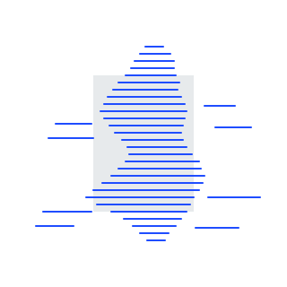
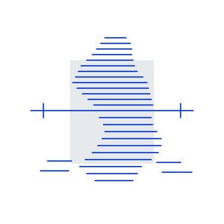
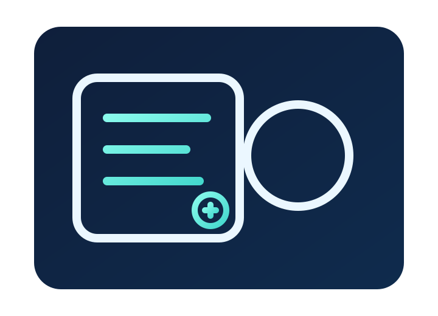
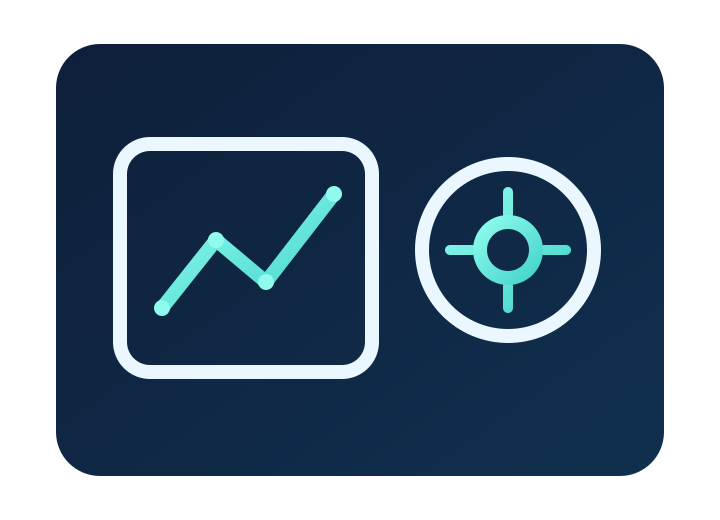

LS Coaching
Online Fitness Coaching
pensato per i tuoi risultati.
Allenamento, nutrizione e supporto continuo in un percorso premium costruito su di te.



Coaching 100% online
Percorsi costruiti sui tuoi impegni reali.
Un percorso lineare, spiegato in 5 step.




Programmi
Due percorsi, un solo obiettivo: farti migliorare.
Scegli se partire dal Base o lavorare a fondo con il Premium.
Coaching Base
Allenamento, chiaro e sostenibile.
- Piano di allenamento personalizzato.
- Progressioni e adattamenti programmati.
- Check periodici e revisione del carico.
- Analisi tecnica video e feedback essenziali.
Per chi vuole una guida solida sull’allenamento senza complessità extra.
Scopri il Coaching BaseCoaching Premium
Allenamento + Nutrizione, tutto integrato.
- Allenamento personalizzato e aggiornamenti più frequenti.
- Nutrizione: piano, strategie e aggiustamenti.
- Video analisi tecnica e feedback mirati.
- Monitoraggio ravvicinato e priorità risposta.
Per chi vuole un percorso completo e progressi costanti settimana dopo settimana.
Voglio il PremiumConfronta i percorsi
Coaching Base
Percorso Allenamento
- Piano di allenamento personalizzato.
- Progressioni e adattamenti programmati.
- Check periodici e revisione del carico.
- Analisi tecnica video e feedback essenziali.
Coaching Premium
Allenamento + Nutrizione
- Allenamento personalizzato con aggiornamenti più frequenti.
- Nutrizione: piano, strategie e aggiustamenti.
- Video analisi tecnica e feedback mirati.
- Monitoraggio ravvicinato e priorità risposta.
Recensioni Trustpilot
Cosa dicono le persone che hanno lavorato con me.
Sara
IT • 1 recensione
Coach molto attento
Coach molto attento, disponibile e professionale. Gli allenamenti sono strutturati bene, mai improvvisati, e spiegati in modo chiaro. Consigliato a chi cerca un coach competente, umano e affidabile.
Yasin Abd Alla Hel Al
IT • 1 recensione
Qualità e Professionalità
Mi sono affidato completamente a Leonardo dopo anni di allenamenti fai da te e devo dire che è stato super professionale, sempre disponibile e preparato. Allenamenti efficaci e personalizzati, risultati concreti. Consigliatissimo 💪🔥
Lorenzo Caramadre
IT • 1 recensione
Una piacevole scoperta
Leonardo, a differenza di quel che si può trovare ovunque, non si limita a realizzare una scheda copia ed incolla ma ti indirizza e si prende cura di un vero e proprio percorso di vita. Mi ha fatto riscoprire che allenarsi, avere sane abitudini, conseguire un obiettivo... non deve significare necessariamente rinuncia e fatica mentale. Abbiamo impostato un percorso sostenibile e consapevole che oltretutto ha avuto un’impatto positivo anche su tutto il resto. In più... Per ogni dubbio, ogni domanda, che sia in palestra o a casa, ha sempre trovato una risposta presente, precisa, umana.
Mattia Laurenti
IT • 1 recensione
PROFESSIONISTA ECCELLENTE
Leonardo è un professionista eccellente. Preparato, gentile, educato, sa ascoltare le tue necessità ed è in grado di supportarti in ogni passo necessario per ritrovare il proprio benessere fisico (e non solo). Ho cominciato un percorso con lui e devo dire che sono più che soddisfatto, sia per i risultati che sto ottenendo, sia perché finalmente ho visto una persona in grado di LEGGERE il mio corpo e di conseguenza fornirmi una scheda AD PERSONAM per ciò di cui il mio corpo ha bisogno per migliorarsi. Ah e c’è anche l’app per chi, come me, non conosce la nomenclatura di nessun esercizio e non sa come farli... nell’app ci sono video e spiegazioni top per farti fare tutto nel modo corretto.
Angelica
IT • 3 recensioni
Top coach!
Ho iniziato questo percorso con Leonardo un po' scettica sull'online, appena ho fatto la consulenza gratuita mi sono immediatamente ricreduta. Il percorso è personalizzato nei minimi dettagli ed ogni mia esigenza è stata sempre ascoltata e presa in considerazione. L'app rende gli allenamenti facili da seguire ma quello che fa davvero la differenza è il supporto umano: tra le videoconsulenze frequenti ed i messaggi su whatsapp mi sono sentita veramente seguita ed ascoltata, e alla fine i risultati sono arrivati e continuano ad arrivare senza stress e senza cose troppo rigide o drastiche che con me avevano sempre fallito prima. Lo consiglio a chi cerca un coaching online serio, fatto bene e con attenzione reale alla persona.
Alessandro De Bonis
IT • 1 recensione
MIGLIOR COACH IN CIRCOLAZIONE
Leonardo oltre ad essere una persona che si presenta molto bene, è anche preparato ed empatico, quindi comprende appieno le esigenze di ogni persona. I suoi modi sono sempre tranquilli ed eleganti e si esprime in modo semplice ma efficace
Mariacristina Confrini
IT • 1 recensione
Felice della mia scelta
Non sono più una giovincella ed è passato un po' di tempo dall'ultima volta che mi sono dedicata seriamente all'allenamento, ma finalmente ho ritrovato la motivazione! Sono grata di aver incontrato Leonardo, che mi sta guidando con tanta pazienza in questo percorso. Ha saputo creare un piano su misura, tenendo conto delle mie esigenze e del mio ritmo, facendomi sentire subito a mio agio. Mi ha aiutata molto pazientemente con la tecnica ed ogni allenamento è stimolante. Grazie a lui, sto riscoprendo il piacere del movimento e di una sana alimentazione. Se cercate qualcuno di competente e umano, Leonardo è la persona giusta!
Giuseppe
IT • 1 recensione
Super motivatore
Con Leonardo mi sto trovando davvero benissimo! Ero stanco e quasi demotivato di andare in palestra, stanco delle solite schede copia e incolla e soliti esercizi. Con il suo programma personalizzato, non solo ho ritrovato la giusta motivazione di allenarmi per bene ma ho iniziato a vedere dei miglioramenti dopo mesi di stallo. Che dire è un vero motivatore attento ad ogni minimo dettaglio, che, basandomi sulla mia esperienza fa davvero la differenza. Bravissimo e super consigliato !!
Lorenzo Fabri
IT • 1 recensione
Assolutamente il migliore
Leonardo è un professionista in tutti gli aspetti. Ti segue a 360 gradi studiando attentamente il percorso più adatto a te accompagnandoti ad ogni passo verso risultati che non tardano ad arrivare!
Anna
IT • 1 recensione
Conosco Leonardo da un po' e posso...
Conosco Leonardo da un po' e posso assicurarvi che è un Personal serio preparato e sempre presente.Se seguirete con costanza i suoi piani di allenamento avrete dei risultati garantiti!
La tua esperienza conta
Vuoi lasciare anche tu una recensione?
Se hai già iniziato il tuo percorso con me, puoi raccontare la tua esperienza direttamente su Trustpilot.
- Aiuti altre persone a scegliere con più fiducia.
- Condividi i risultati reali del tuo percorso.
- Bastano meno di 2 minuti.
LS coaching è diverso.
È un percorso seguito davvero: ci sono io, non solo un PDF. Il piano si adatta alla tua vita, non il contrario.
- Zero promesse “miracolose”: lavoriamo su obiettivi coerenti con il tuo punto di partenza.
- Metodo scientifico + pragmatismo: le strategie devono funzionare anche quando lavori, studi e hai una vita.
- Focus sul lungo termine: non ti lascio con risultati che durano due mesi.
PRESENTE
Non sparisco dopo la scheda.
Non ti lascio solo con un file. Hai un contatto costante: feedback, aggiustamenti e risposte ai dubbi che emergono nella vita reale.
MISURABILE
I numeri guidano le scelte.
Misuriamo progressi e performance, poi aggiustiamo il piano in modo oggettivo.
PERSONALE
Percorso davvero su misura.
Carichi, esercizi e volumi calibrati su leve, recupero e disponibilità.
LIBERA
Non devi vivere in palestra.
Il piano viene costruito sui tuoi orari e sulle tue energie. Non serve allenarsi 6 volte a settimana per vedere risultati.
SOSTENIBILE
Regole semplici, applicabili.
Strategie che funzionano nella tua routine: lavoro, studio, famiglia.
FAQ
Domande frequenti sul coaching online.
Rispondo in anticipo alle domande che ricevo più spesso. Se hai un dubbio diverso, puoi sempre scrivermi in consulenza.
Il percorso non è “una scheda e via”. Ha più senso pensarla in blocchi di almeno 3 mesi: il tempo necessario per vedere cambiamenti concreti e consolidarli. Molte persone scelgono di continuare più a lungo per lavorare su fasi diverse (ricomposizione, forza, mantenimento).
Possiamo lavorare sia in palestra che a casa. Il programma viene costruito sulle risorse che hai davvero: tempo, attrezzatura, livello. L’importante è essere onesti su cosa puoi fare davvero nella tua settimana tipo.
No, niente diete da sopportare “per 4 settimane e poi basta”. Lavoriamo con linee guida nutrizionali, distribuzione dei pasti, gestione delle occasioni sociali e strategie sostenibili nel lungo periodo.
Hai check strutturati e la possibilità di aggiornarmi su come stai andando. In base ai tuoi feedback, ai biofeedback (energia, sonno, fame, performance) e agli imprevisti della tua vita reale, adattiamo allenamento e nutrizione.
Contatti
Il passo concreto è la consulenza gratuita.
Niente obblighi, niente trappole: analizziamo la tua situazione, vediamo se posso aiutarti e quale percorso ha più senso per te.